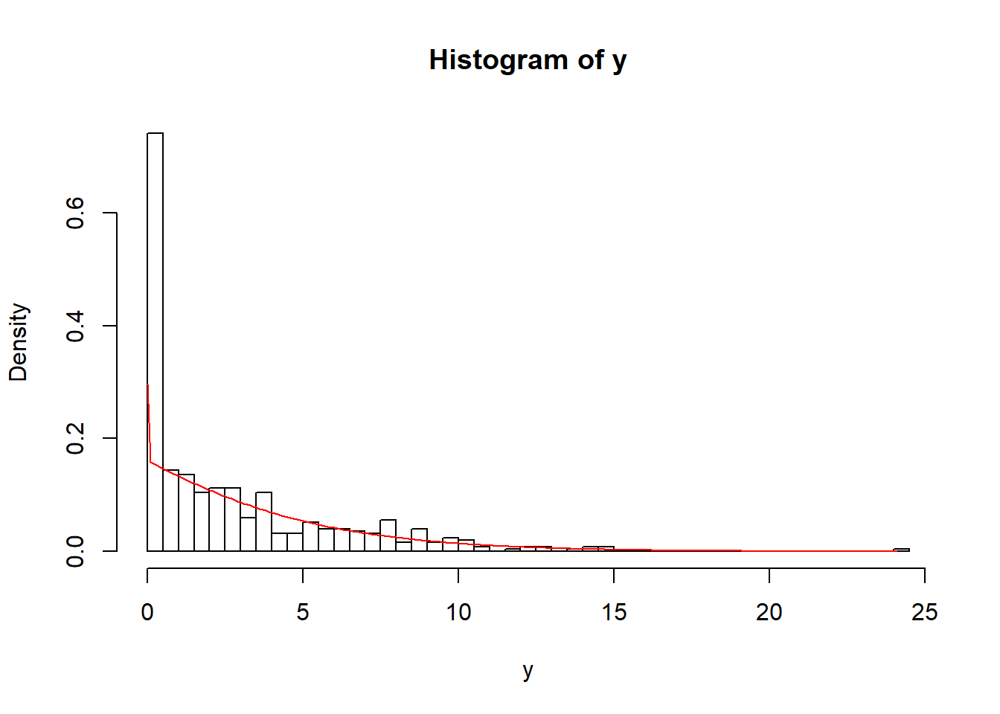
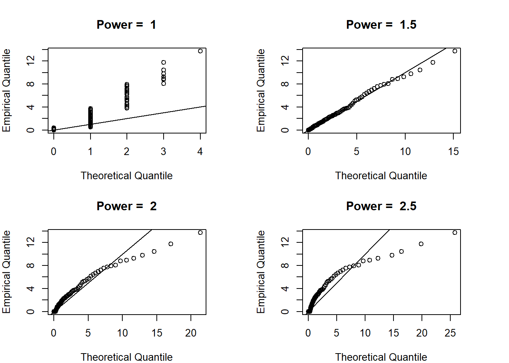

Chapter 8 Tweedie
This file contains illustrative R code for the Tweedie distribution. When reviewing this code, you should open an R session, copy-and-paste the code, and see it perform. Then, you will be able to change parameters, look up commands, and so forth, as you go.
8.1 Tweedie distribution
8.1.1 Load Tweedie Package
First bring in the package Tweedie (you may need to first install this package).
library(tweedie)8.1.2 Set Paramteres for Tweedie(p,mu,phi)
Setting parameters p, mu and phi defines the specific features of the distribution.
Furthermore, setting a specific seed allows us to generate the same randomn numbers so we can produce identical distributions
set.seed(123)
p <- 1.5
mu <- exp(1)
phi <- exp(1)8.1.3 Set Sample Size
Sample size is set to 500 for this example. “y” holds all 500 obserations from tweedie distribution with the given parameters.
n <- 500
y <- rtweedie(n,p,mu,phi)8.1.4 Show Summary Statistics
Here we calculate important statisitics like mean, median, standard deviation and quantiles.
summary(y) Min. 1st Qu. Median Mean 3rd Qu. Max.
0.000 0.000 1.438 2.687 3.878 24.181 sd(y)[1] 3.346954quantile(y,seq(0,1,0.1)) 0% 10% 20% 30% 40% 50%
0.0000000 0.0000000 0.0000000 0.0000000 0.7275496 1.4378933
60% 70% 80% 90% 100%
2.3767214 3.4212150 5.2317625 7.7471281 24.1813833 8.1.5 Show Histogram
Histograms are useful for visually interpreting data. Sometime summary statistics aren’t enough to see the full picture.
hist(y, prob=T,breaks=50)
x <- seq(0,max(y),0.1)
lines(x,dtweedie(x,p,mu,phi),col="red")
8.1.6 QQ Plots for Different p Values
A QQ plot is a plot of the quantiles of the first data set against the quantiles of the second data set.
This is graphical technique for determining if two data sets come from populations with a common distribution.
It appears here that a power of 1.5 matches the distribution best.
par(mfrow=c(2,2),mar=c(4,4,4,4))
qqTweedie <- function(xi,pct,mu,phi) {
plot(qtweedie(pct,xi,mu,phi),quantile(y,probs=pct),
main=paste("Power = ",xi), xlab="Theoretical Quantile", ylab="Empirical Quantile")
abline(0,1)
}
pct <- seq(0.01,0.99,0.01)
lapply(c(1,1.5,2,2.5),qqTweedie,pct=pct,mu=mu,phi=phi)
[[1]]
NULL
[[2]]
NULL
[[3]]
NULL
[[4]]
NULL8.1.7 Fit Tweedie Distribution
Here we run a “glm” for the Tweedie distribution. you may need to first install the “statmod” package
library(statmod)
fit <- glm(y~1,family=tweedie(var.power=1.5,link.power=0))
summary(fit)
Call:
glm(formula = y ~ 1, family = tweedie(var.power = 1.5, link.power = 0))
Deviance Residuals:
Min 1Q Median 3Q Max
-2.5607 -2.5607 -0.6876 0.5155 5.1207
Coefficients:
Estimate Std. Error t value Pr(>|t|)
(Intercept) 0.9885 0.0557 17.75 <2e-16 ***
---
Signif. codes: 0 '***' 0.001 '**' 0.01 '*' 0.05 '.' 0.1 ' ' 1
(Dispersion parameter for Tweedie family taken to be 2.542861)
Null deviance: 1618.8 on 499 degrees of freedom
Residual deviance: 1618.8 on 499 degrees of freedom
AIC: NA
Number of Fisher Scoring iterations: 48.1.8 Show Parameter Estimates
We now display the parameter estimates calculated in the glm.
summary(fit)$coefficient Estimate Std. Error t value Pr(>|t|)
(Intercept) 0.9885415 0.0556989 17.74795 5.42159e-55summary(fit)$dispersion[1] 2.5428618.1.9 Maximum Likelihood Estimation
Here we run a “MLE” to determine the most likely parameters of the Tweedie distribution.
loglik<-function(parms){
p=parms[1]
mu=exp(parms[2])
phi=exp(parms[3])
llk <- -sum(log(dtweedie(y, p, mu, phi)))
llk
}
ini <- c(1.5,1,1)
zop <- nlminb(ini,loglik, lower =c(1+1e-6,-Inf,-Inf),upper =c(2-1e-6,Inf,Inf))
print(zop)$par
[1] 1.4823346 0.9885411 0.9871154
$objective
[1] 1122.992
$convergence
[1] 0
$iterations
[1] 14
$evaluations
function gradient
23 77
$message
[1] "relative convergence (4)"8.1.10 Obtain Standard Error
Now we calculate the standard errors of our parameter estimates from the MLE. You may need to first install the “numDeriv” package.
library(numDeriv)
est <- zop$par
names(est) <- c("p","mu","phi")
hess<-hessian(loglik,est)
se <-sqrt(diag(solve(hess)))
print(cbind(est,se)) est se
p 1.4823346 0.02260226
mu 0.9885411 0.05672086
phi 0.9871154 0.05060983